class: center <br> # Spatial Analysis of Urban Data ## Lecture and Tutorial: Cartographic Design [Bayi Li](mailto:barryli081@gmail.com) --- name: why-map-design ## Cartographic design is a form of analytical communication .right_half[ <figure> <p>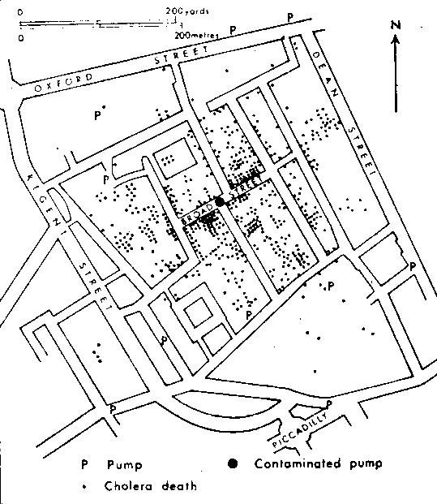</p> <figcaption>John Snow's cholera map (c. 1854): deaths cluster around the Broad Street water pump, making the case that cholera spread through contaminated water.</figcaption> <figsubcaption>Source: <a href="https://www.york.ac.uk/depts/maths/histstat/snow_map.htm" target="_blank">"John Snow's Cholera Map"</a>, History of Statistics, University of York; redrawn version shown in Stamp, L. D. (1964), <i>A Geography of Life and Death</i>.</figsubcaption> </figure> ] The landmark example of spatial analysis: The map, produced during London's 1854 cholera outbreak, helped support the argument that **cholera was associated with contaminated water**. ### What Makes a Map Tell a Story - a clear **message**: one main idea - **focus**: visual hierarchy that leads the eye to that message first - **context**: necessary basemap and reference --- ## Cartographic design is a form of analytical communication .right_half[ <figure> <p>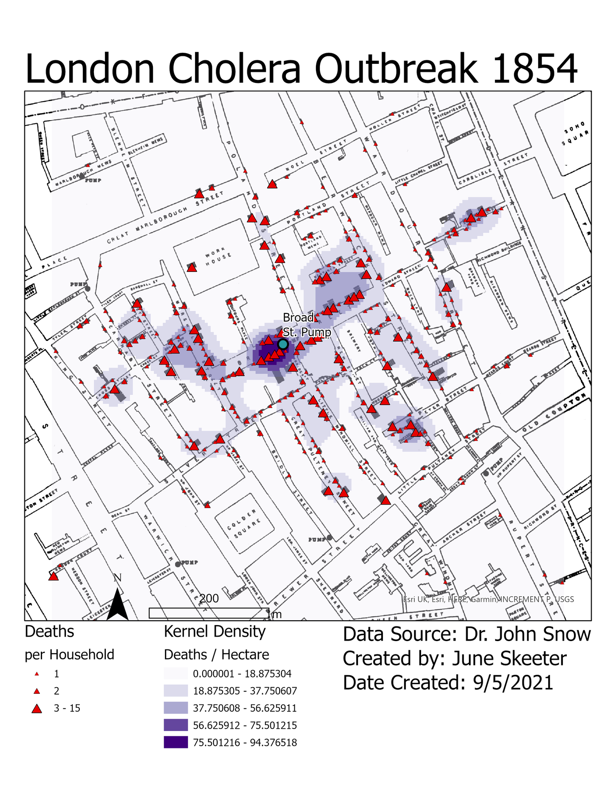</p> <figsubcaption>Source: <a href="https://geos270.github.io/LectureSlides/Choice_of_Data_Model/Slides.html#/working-together" target="_blank">"Recreation of John Snow's Cholera Map" GEOS 270@Dr. June skeeter</a>.</figsubcaption> </figure> ] ### What the recreation improves - Visual hierarchy. The kernel density surface makes Broad Street the darkest, most saturated spot on the map. - Framing and metadata. - The title states what, where and when. - The source, author and date make it credible and citable. - Magnitude per location. Graduated triangles show how many deaths each household had (1, 2, 3-15). --- ## Cartographic design is a form of analytical communication .right_half[ <figure> <figcaption>John Snow's cholera map (c. 1854): deaths cluster around the Broad Street water pump, making the case that cholera spread through contaminated water.</figcaption> <figsubcaption>Source: <a href="https://www.york.ac.uk/depts/maths/histstat/snow_map.htm" target="_blank">"John Snow's Cholera Map"</a>, History of Statistics, University of York; redrawn version shown in Stamp, L. D. (1964), <i>A Geography of Life and Death</i>.</figsubcaption> </figure> ] ### A Map Always Answers a Question Define the question first. Examples: - Which districts have the highest population density? - How accessible are transport stops from residential blocks? - How does land use differ across the city? --- name: storytelling .right_half[ <figure> <p>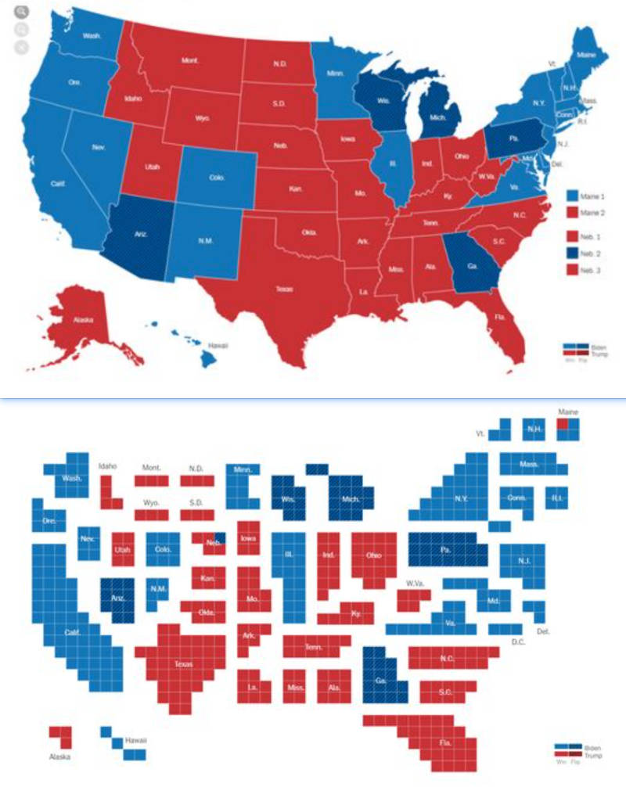</p> <figcaption>The Election Mapped Two Ways (choropleth and cartogram).</figcaption> <figsubcaption>Source: <a href="https://www.linkedin.com/posts/inna-tsirlin-phd-6114374_data-datascience-datavisualization-share-7260658458847240193-TtMo/" target="_blank">LinkedIn post@Inna Tsirlin</a>.</figsubcaption> </figure> ] ## Maps: A Powerful Tool of Storytelling Every map makes an argument about what matters, where to look, and what to conclude. No map is neutral. Every choice of data, classification, colour and scale shapes the message. - Done well: the main message lands quickly - Done poorly: the same data misleads **Be transparent rather than "objective":** show your choices, state your sources, and let the data, not the styling, carry the claim. .references[ - Roth, E. Roth (2020). Cartographic design as visual storytelling. *The Cartographic Journal.* https://www.tandfonline.com/doi/full/10.1080/00087041.2019.1633103 - Sara Nelson; Steven Manson; and Eric Deluca. Lying With Maps. https://open.lib.umn.edu/mapping/chapter/7-lying-with-maps/#footnote-148-4 ] --- .right_half[ <figure> <p>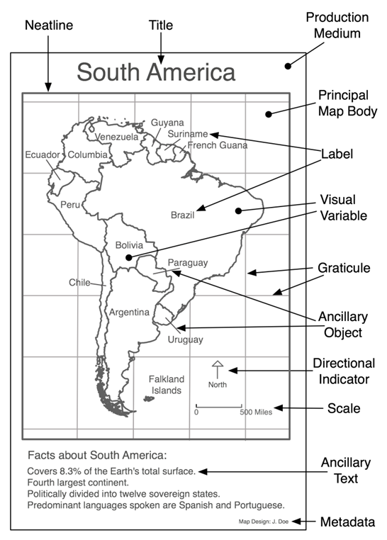</p> <figcaption>The Map Elements.</figcaption> <figsubcaption>Source: <a href="https://open.maricopa.edu/gist/chapter/4-2-map-design-and-map-elements/" target="_blank">Map Design and Map Elements@Maricopa Community Colleges</a>.</figsubcaption> </figure> ] ## Elements of a Map A complete map typically combines: - title - map body - legend - labels - scale indicator - Directional indicator (north arrow) - Meta Data: data source and author note **Not every map needs every element, but every map needs enough for readers to grasp the main point accurately** --- .right_half[ <figure> <p>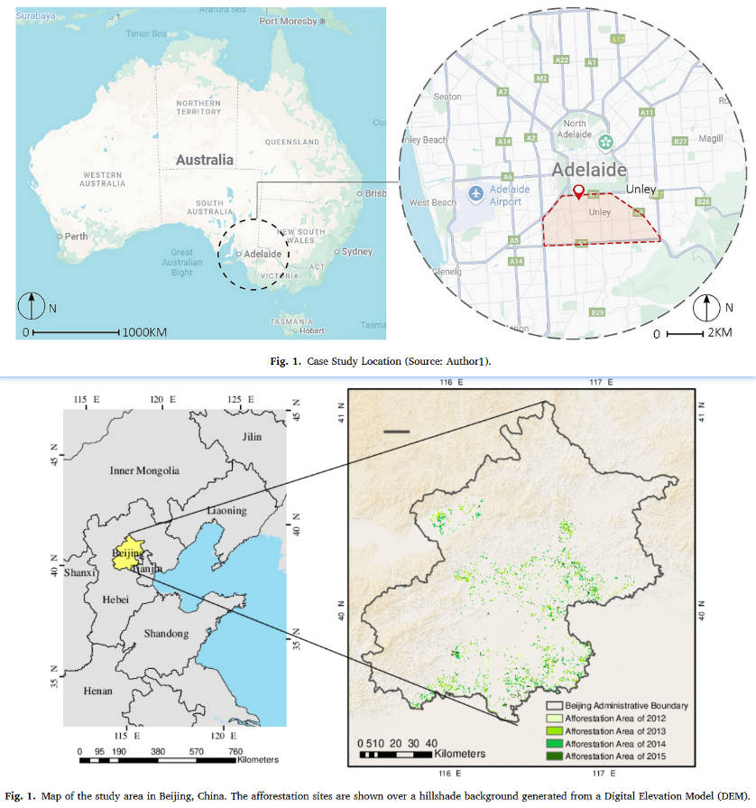</p> <figcaption>Example of a polished static thematic map with clear layout and hierarchy.</figcaption> <figsubcaption>Sources: (top) <a href="https://doi.org/10.1016/j.landurbplan.2026.105783" target="_blank">Chen et al. (2027)</a>, <i>Landscape and Urban Planning</i> 278, 105783, Fig. 1; (bottom) <a href="https://doi.org/10.1016/j.landurbplan.2026.105786" target="_blank">Feng et al. (2027)</a>, <i>Landscape and Urban Planning</i> 278, 105786, Fig. 1.</figsubcaption> </figure> ] ## Two location maps from Journal Clear overview-to-detail logic; study area stands out **Map 1: Unley, Adelaide** - Not credited basemap - Frames clip labels - Basemap clutter competes with the study area - Scale bar invalid at continental scale (Web Mercator) How about Map 2: Beijing afforestation? --- name: design-principles .right_half[ <figure> <p>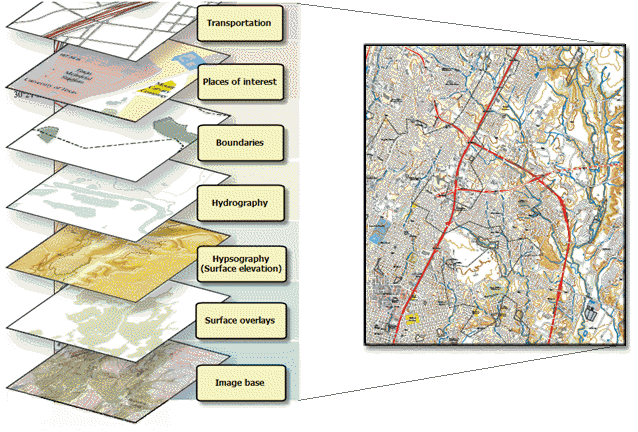</p> <figcaption>Organise Maps With layers of Data.</figcaption> <figsubcaption>Sources: <a href="https://www.geomaptric.co.uk/IoW_web/layers/index.html" target="_blank">IoW Council Cranfield GeoMapTric</a></figsubcaption> </figure> ] ## Layers of a Map A map could be sigle layer of with multiple data layers to increase the details, for example: 1. transport networks 2. places of interest 3. Boundaries are overlaid 4. natural features of hydrography 5. a digital elevation map 6. land useage 7. a base map --- .right_half[ <figure> <img src="imgs/assignment_sdp1/s1_choosebasemap.jpg" width="80%"> <figcaption>Several basemaps available through QGIS plugin: HCMGIS.</figcaption> </figure> ] ## Basemaps and Context Basemaps should support the message, not dominate it. - Use quiet, neutral basemaps for thematic overlays - Remove or mute basemap labels that compete with your annotations - Use satellite imagery only when image detail is analytically necessary, and desaturate it when you do --- name: visual-variables .right_half[ <figure> <p>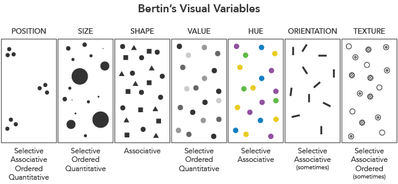</p> <figcaption>Bertin's Visual Variables.</figcaption> <figsubcaption>Sources: <a href="https://www.axismaps.com/guide/visual-variables" target="_blank">General Map Making Topics: Visual Variables; Jacques Bertin. Semiology of Graphics (1967)</a></figsubcaption> </figure> ] ## Visual Variables Cartographic design relies on a small set of visual variables: - Position - Size - Shape - Value - Hue - Orientation - Texture --- .right_half[ <figure> <p>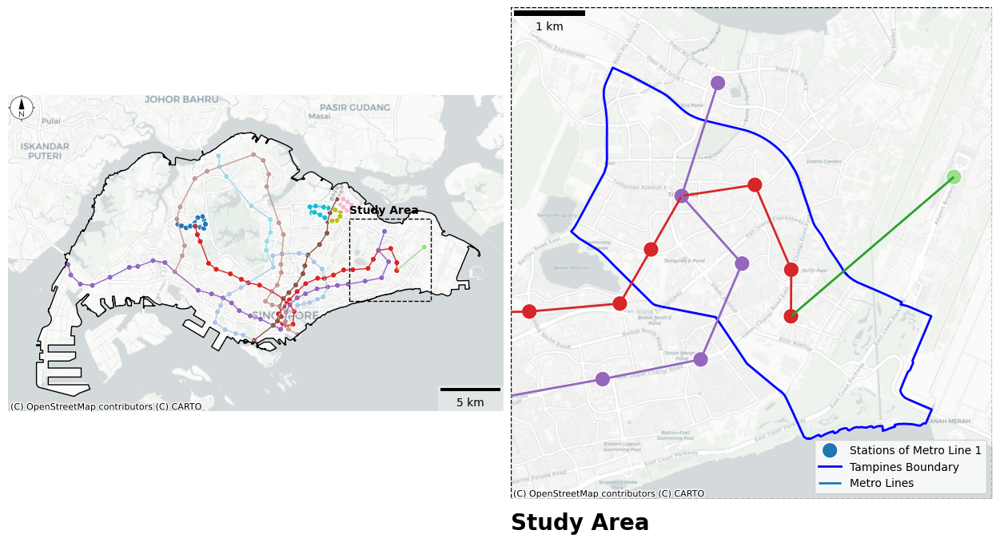</p> <figcaption>The MRT stations in Tampines.</figcaption> <figsubcaption>Sources: Author</figsubcaption> </figure> ] .left_half[ ### Qualitative data Best represented by: - Distinct hues - Different shapes or textures Use to separate classes, such as land use type or transit mode. ] --- .left_half[ <figure> <p>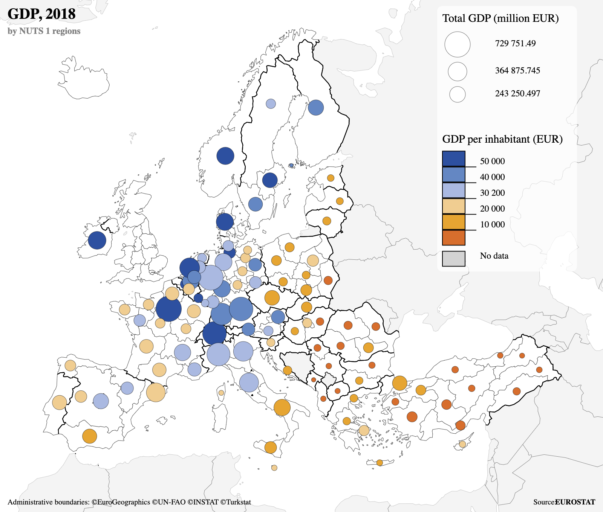</p> <figsubcaption>Sources: <a href="https://observablehq.com/@joewdavies/eurostat-map-js#bivariate" target="_blank">Eurostat-map.js on observablehq.com</a></figsubcaption> </figure> ] .right_half[ ### Quantitative data Best represented by: - Ordered colour value (light → dark) - Graduated symbol size Use to compare magnitude, such as population density or case counts. Map raw counts with symbols; map rates with colour. **Ordered categories** (e.g., low / medium / high) also use value, never unrelated hues. ] --- .right_half[ <figure> <p>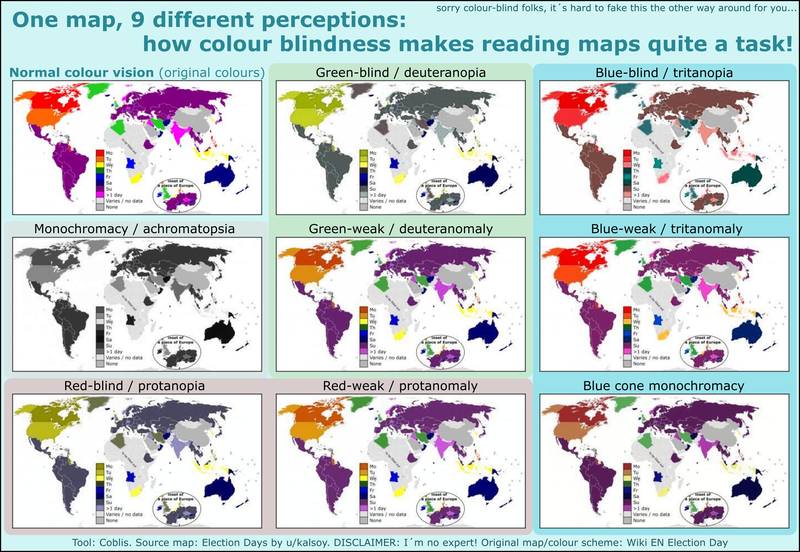</p> <figcaption>One map, nine perceptions: the same categorical colour scheme seen with normal vision and eight types of colour vision deficiency.</figcaption> <figsubcaption>Source: <a href="https://imgur.com/through-eyes-of-colour-blind-simulating-how-world-map-is-coloured-CMCywUU" target="_blank">"Through the eyes of the colour-blind: simulating how a world map is coloured"</a>, Imgur (simulated with Coblis; original map: Election Days by u/kalsoy).</figsubcaption> </figure> ] ## Colour Design Colour should help interpretation rather than decorate the page. - keep saturation under control to avoid visual noise - check whether the scheme remains legible on a projector and in print **Tool**: [ColorBrewer 2.0](https://colorbrewer2.org/) by Cynthia Brewer helps you pick a colour ramp. Choose the data type (sequential, diverging, qualitative) and the number of classes, then filter for colour-blind safe, print friendly, or photocopy safe schemes. The same ramps are built into QGIS (*Color ramp → ColorBrewer*) and Python (e.g. `cmap="YlOrRd"` in matplotlib/geopandas). .references[ - Brewer, C. A., Harrower, M., & The Pennsylvania State University. *ColorBrewer 2.0: Color advice for cartography*. [https://colorbrewer2.org/](https://colorbrewer2.org/) ] --- name: scale .right_half[ <figure> <p>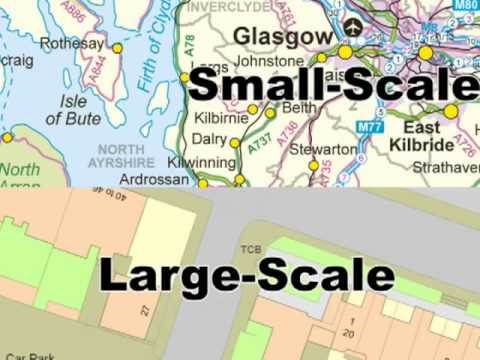</p> <figsubcaption>Source: <a href="https://www.edrawsoft.com/what-is-map-scale.html?" target="_blank">Large Scale and Small Scale Maps</a></figsubcaption> </figure> ] ## Map Scale: How Much Has the World Been Shrunk? - **large scale** = large fraction (1:1,000) → small area, lots of detail, e.g. an HDB precinct - **small scale** = small fraction (1:10,000,000) → large area, little detail, e.g. Southeast Asia --- ## Scale Is Not Constant Across a Map Every projection distorts something, so a single scale bar is only exact along certain lines. .left_half[ ### Projected local maps - Singapore's **SVY21** (EPSG:3414) is a Transverse Mercator projection fitted to the island - distortion across Singapore is tiny, so one scale bar is valid everywhere on the map ] .right_half[ ### Web Mercator and small-scale maps - the same zoom level 15 tile: **1 px ≈ 4.8 m** in Singapore (1.3°N), **≈ 3.0 m** in London (51.5°N) - on a continental or world map, one scale bar is wrong for most of the map ] <div class="clear"></div> This is the error in the Unley (Adelaide) example earlier: a scale bar on a continental Web Mercator inset **Rule**: at small scales, drop the scale bar, use a latitude-specific one ("scale true at 1°N"), or choose an equal-area / equidistant projection that suits the question. --- name: choropleth .right_half[ <figure> <p>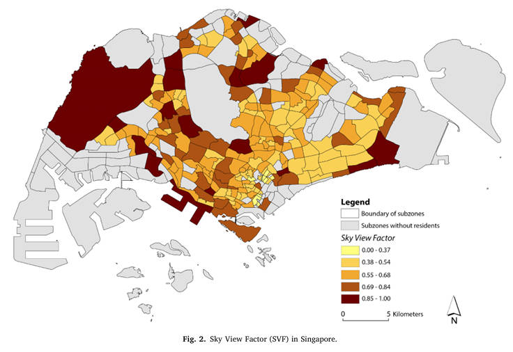</p> <figsubcaption>Source: <a href="https://www-sciencedirect-com.sutd.idm.oclc.org/science/article/pii/S026427512200542X" target="_blank">Wei Zhu and Chao Yuan (2023). Figure 2.</a></figsubcaption> </figure> ] ## Choropleth Maps A choropleth map shades predefined areas, such as countries or districts, by a statistical value for each area, ideally a rate or density rather than a raw count. They are widely used because they summarise area-based data clearly. Use them when: - values are standardised, such as percentage or density - the reporting unit matters, such as planning zones or districts - the main goal is comparison across areas --- .right_half[ <figure> <p>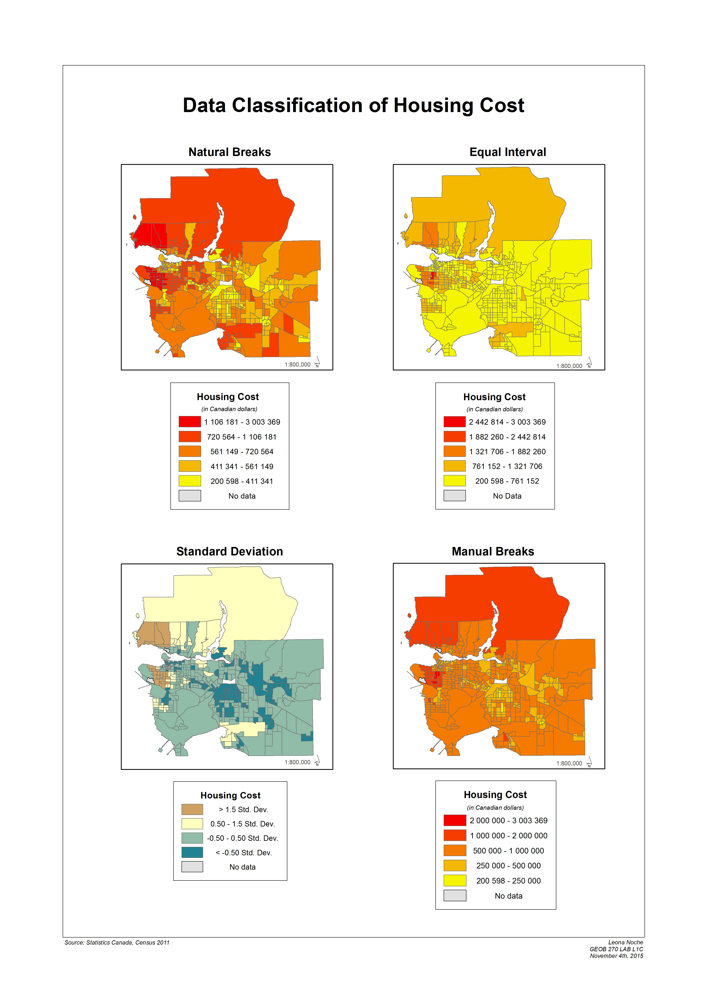</p> <figsubcaption>Source: <a href="https://blogs.ubc.ca/rightclickleona/2015/11/03/quantitative-data-classification/" target="_blank">Quantitative Data Classification.</a></figsubcaption> </figure> ] ## Classification Choices Matter For choropleth maps, class breaks strongly affect interpretation. Common approaches: - **natural breaks**: groups similar values together - **equal interval**: divides the value range into equal-width classes - **quantile**: puts an equal number of areas in each class - **standard deviation**: classes by distance from the mean - **manual**: manually set one or all of the class break The same data can tell different stories depending on the breaks, so choose them deliberately and state them in the legend. --- ## Practice for Choropleth Maps in QGIS When building a choropleth map in QGIS, follow these rules first: 1. map a **rate, ratio, percentage, or density**, not a raw count 2. choose a **single clear attribute field** and check for null or extreme values 3. use a **sequential colour ramp** for ordered values, or a **diverging ramp** only when there is a meaningful midpoint 4. start with **4 to 6 classes** so the legend remains readable 5. compare class break methods in QGIS before deciding which one best matches the story in the data 6. use thin, quiet polygon outlines so boundaries do not overpower the pattern 7. keep the basemap light or remove it entirely if it competes with the thematic layer --- ## Practice for Choropleth Maps in QGIS **Question**: Which planning areas have the highest share of residents aged 65 and above? **Data** (data.gov.sg): - [Resident Population by Planning Area/Subzone of Residence, Age Group and Sex (Census of Population 2020)](https://data.gov.sg/datasets/d_d95ae740c0f8961a0b10435836660ce0/view) - [Master Plan 2019 Planning Area Boundary (No Sea)](https://data.gov.sg/datasets/d_4765db0e87b9c86336792efe8a1f7a66/view) **Steps**: 1. Keep only the planning-area rows (e.g. `Ang Mo Kio - Total`), not the subzone rows 2. **Do it in Excel?**: Clean the name to match `PLN_AREA_N` (upper case, without ` - Total`). 3. Uninhabited areas show `-` instead of 0: convert them to empty values, not zero rates 4. Calculate `pct_65plus = (Total_65_69 + ... + Total_90andOver) / Total_Total * 100`, then join to the boundary 5. Style as a graduated map with 5 classes and a sequential colour ramp -- <xL>Can you generate the map with Python code?</xL> --- ## Practice for Choropleth Maps in QGIS In QGIS, the usual workflow is: - open **Layer Properties -> Symbology** - choose **Graduated** - select the target field - choose a colour ramp - test **Quantile**, **Natural Breaks (Jenks)**, and **Equal Interval** - inspect the map and legend together before exporting The goal is not only a beautiful map, but one that is statistically defensible and easy to interpret. --- name: critique ## Map Critique Checklist When reviewing a map, ask: - What is the main message? - Is the map type appropriate for the variable? - Does the basemap help or distract? - Are colours and labels readable? - Is the legend easy to interpret? - Is the scale bar valid for the projection and extent, and does the grid help or clutter? - Could the map be misleading because of scale, classification, or symbol choice? If these questions are hard to answer, the design likely needs revision. --- name: assignment .right_half[ <a href="assignment_sdp1.html" target="_blank">Open the full assignment brief in a new tab ↗</a> <iframe class="map-embed" src="assignment_sdp1.html" title="Assignment: Spatial Data Processing (Part I)" style="height: 55vh;"></iframe> ] ## Assignment: Spatial Data Processing (Part I) Apply this week's design principles: create **one location map of a place of interest in Singapore with QGIS or Python**, overlaying open datasets on a basemap with an inset locator map. Released this week; due end of Week 7. Part II (Weeks 8–9) adds calculations and a thematic map of the same place. --- <xL>Assignment brief: </xL><button onclick="window.location.href='assignment_sdp1.html'">Go to Assignment (Part I)</button> <xL>Continue with Lecture: </xL><button onclick="window.location.href='vector.html'">Go to Spatial Analysis of Vector Data</button> <xL>Back to course menu: </xL><button onclick="window.location.href='index.html'">Go Back to Menu</button>